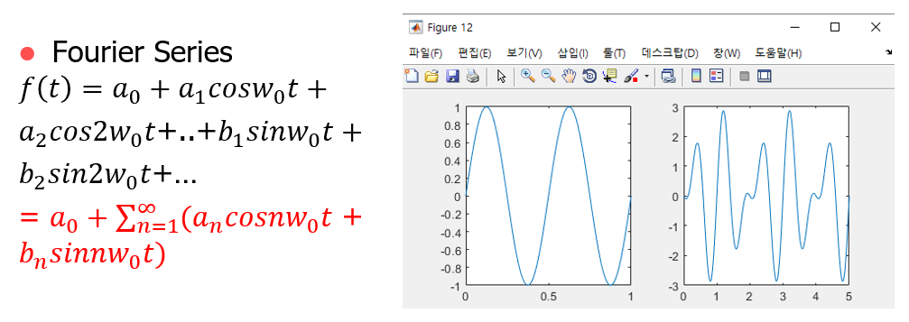
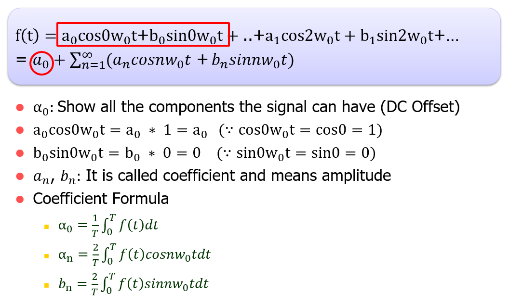
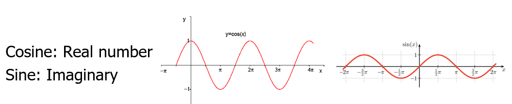

Study
Study list
Research
My Research
주기신호의 푸리에 급수
Fourier series of periodic signals
푸리에 급수란 무엇일까?
통신공학 혹은 교류(또는 파동 등)를 해석하는데 있어 퓨리에는 반드시 짚고 넘겨야 합니다. 추가적으로, 여기에 오일러 공식개념까지 추가됩니다.
하지만 퓨리에 변환을 논하기 전에, 퓨리에 급수에 대한 정의가 필요합니다.
다음 그림은 매트랩에서 얻은 두 가지 정현파 입니다.
그림만 놓고 봤을 때 가장 수월하게 분석할 수 있다고 생각드는 그래프가 왼쪽의 정현파 입니다.
만약 저 신호가 엄~청 복잡해지더라도 주기적이기 때문에 직류와 정현파(sine), 여현파(cosine)가 합성된 파형이라는 것이 주된 논리입니다.
즉, 주기신호에 한해서 어떤 파동이든지 모조리 표현할 수 있는 식을 만들자는 취지 아래 구현 된 것이 퓨리에 급수입니다.
왼쪽에 퓨리에 급수식이 나오는데, 급수라는 것은 고딩때 배운 무한급수처럼 수들의 계속적인 합이 무한대로 이어진 것을 의미하는데, 이처럼 퓨리에 급수도 무언가 계속 더해진 형태를 갖는다는 것을 짐작할 수 있습니다.

[퓨리에 계수의 의미와 공식]
여기 빨간네모박스안에서 두 항만 떼어서 보면 cos0은 1, sin0은 0이므로 결국 a0만 남습니다.

따라서 이 a0는 신호가 가질 수 있는 모든 성분을 표시해야 하기 때문에 0을 기준으로 (+)든 (-)든 직류 offset을 의미합니다.
나머지 식도 마찬가지이며 파형성분이 들어가면 코사인과 사인파가 들어가는 것은 당연합니다.
이 때 an은 코사인파진폭 bn은 사인파 진폭을 의미하게 됩니다.
이러한 식을 간결하게 하여 시그마가 들어간 식이 최종형태가 됩니다.
아래 동영상을 보면 위에서부터 진폭(계수)이 점점 1, 1/3, 1/5, 1/7씩 작아지면서 만들어지는 사인파의 모습을 나타냅니다.
정리하자면, 퓨리에 급수는 주기적인 신호에 한해서 세상에 존재할 수 있는 모든 파동을 수식으로 나타냈으며 사인과 코사인의 조합으로 만들어집니다.
만약 복잡한 파형의 기본 주파수가 1Hz라면 복잡한 파형은 이 기본주파수에 x1, x2, x3..등 정수배의 주파수인 2Hz, 3Hz, 4Hz가 더해집니다(합성됨)
그래서 사인파든 코사인파든 기본주파수의 정수배가 곱해진 형태로 눈에 보입니다.
일종의 복잡한 파형에 있을 수 있는 성분들을 짬뽕시킨 공식이라고 보면 됩니다.
지금까지 논한 것만으로는 임의의 파형에 대한 합성된 파형을 모두 분석해 냈다고 볼 수 없겠죠?
그렇다면 식에서 보이는 a1, a2, b1,b2 등등 이런것들이 보이는데 이것을 우리는 계수(coefficient)라고 부릅니다.
이 각각의 계수의 의미와 어떻게 계산에 내는지가 중요합니다.
계수는 예를 들어, 3x+2=10이라는 식이 있다고 치면 변수 x의 앞에 오는 3이 일종의 계수가 됩니다. 결론적으로 계수는 진폭이 됩니다.
이것을 퓨리에 급수식과 연관지어 생각해보면 cos, sin은 각속도(w)에 따라 변하니 일종의 변수가 되는 것이고, 그 앞에 붙은 an, bn이 일종의 계수가 되는 것입니다.
따라서 퓨리에 계수를 구한다는 것은 임의의 파동을 형성하는 합성주파수들 각각의 진폭을 구한다는 말과 동일합니다.
좀 더 상세히 말하자면, 시간축에 있는 아주 복잡한 파형을 개개의 주파수 성분들로 분리해 주파수 축상 개별로 짜개는 것이 기본 개념입니다.
위 그림에서의 노란 점의 공식은 계수를 구하는 식입니다.
정리하자면
a0은 offset,
an은 코사인진폭,
사인진폭으로써 계수 공식증명은 여기서 생략하겠습니다.
[오일러 공식 증명]
여러 책들을 보면 대게 퓨리에 급수나 계수를 바로 사용하는 것이 아니라 자연지수가 포함된 복소형식으로 변환하여 사용하는 것을 매우 선호하는데 이 때 오일러 공식을 이용합니다.
이것은 왜냐하면 미분해도 자신(f'(x)=e^x), 적분해도 그 자신(f(x)=e^x)이 되기 때문에 우리는 용을 쓰면서 자연지수를 도입하여 식을 표현하려는 경향이 있습니다.
위의 노란 점의 퓨리에 공식을 자연지수가 포함된 복소형식으로 바꾸는 것을 돕는 것이 오일러 공식입니다.
그렇다면 오일러의 공식을 증명해 보겠습니다.
두 함수가 있다고 가정했을 때, 원함수의 미지수 x에 0을 대입하였더니 두 함수가 같아졌다면, 이 사실 하나만으로 두 함수가 같다는 등식이 성립하는지 증명되었다고 보기 어렵습니다.
그래서 작은 한 점에서의 기울기가 같은가를 보기로 하고, 두 함수 각각 미분하여 미지수 x에 0을 넣었더니 마찬가지로 같았다고 하면 두 함수가 같음을....
그래서 이를 계속 반복합니다. 2차미분하고 미지수 x에 0을 대입하고, 3차미분하고 미지수 x에 0을 대입하고....
즉, 무한대로 미분해서 미지수 x에 0을 대입해도 두 함수가 값이 같게 나왔다면 두 함수가 같다고 판정할 수 있을 것입니다.
이 밖에 직관적으로 생각해볼 때,
에서 양변 x에 0을 대입해보아도 결국 양변 모두 1이 된다는 것을 알 수 있습니다.
이 공식을 보고 바로 그림으로 형상화 시킬 수 있는 사람이라면 매우 똑똑할 것입니다.
하지만 자연지수함수의 그림이라면 힘들겠지만 삼각함수라면 쉽게 떠오를 것입니다.
하지만 안타깝게도 저는 바로 직관적으로 상상이 안되었기 때문에 실수부와 허수부를 따로 떼어두고 생각을 해봤습니다.

실수부 즉 코사인그림을 볼 수 있습니다.
i가 있는 허수부의 경우 사인파를 상상할 수 있습니다.
이 둘을 합쳐보면 3차원으로 생각해볼 때 가우스평면 상에 나선형으로 돌아가는 모습일 것입니다.
x축을 가정하면 마치 오른나사의 나사산 결처럼 휘돌며 진행하는 그림이 그려져 나옵니다.
[오일러 공식의 자연복소지수로 변환]
오일러는 진정한 수학자라면 계산없이, 이 식을 당연히 이해할 수 있어야 한다고 말했던 수식이 있습니다.
왜 이러한 결과가 나올까요?
따라서 e^ix=-1이 됩니다. 또한 시각적으로 보자면, 다음과 같습니다.
[오일러 공식을 이용한 삼각함수에서 자연지수함수가 포함된 복소형식으로의 변환]
지금까지 오일러의 공식으로 사인과 코사인을 자연지수함수로 표현하는 길을 보았습니다.
지금부터는 다음 공식에 오일러의 미지수 x 대신 각을 표현하는 θ를 넣어 보겠습니다.
이 두 함수에서 사인과 코사인을 자연지수함수 형태로 만들려면(1),(2)를 빼고 더하면 됩니다.
이 식은 사인과 코사인을 자연지수로 표현되는 식으로써 반드시 기억해야 합니다!!!
[퓨리에 변환 예비과정: 퓨리에 급수/계수의 복소형식으로의 변환]
먼저, 퓨리에 변환을 위해서는 선행적으로 퓨리에 급수와 계수를 자연지수함수가 포함된 복소형식으로 바꾸는 수학과정이 필요합니다.
전반적인 수학적 증명은 생략하고, 결과 위주로 말씀을 드리자면,
결국 Cn계수는 a0와 Rn, Kn계수를 내포합니다.